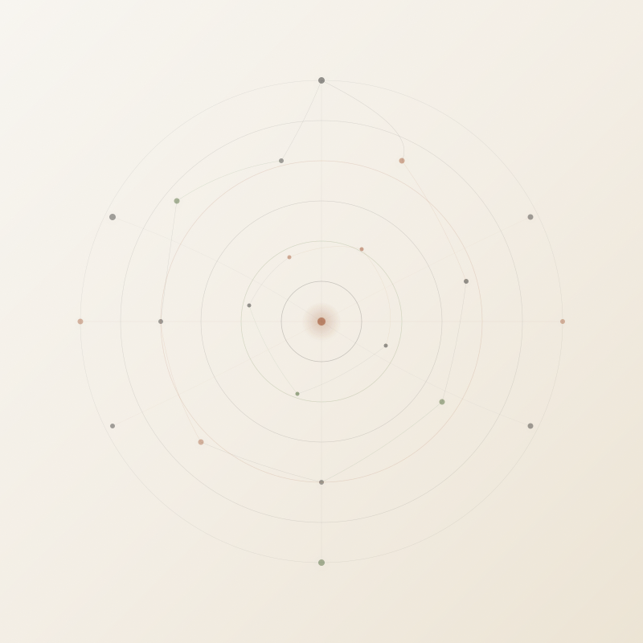

400+ NODES · YOUR ENTIRE STACK
Everything connected.
Nothing manual.
CRM & Sales
Payments
Email
Documents
AI & LLMs
E-commerce
Project Mgmt
Scheduling
DevOps
Every tool your business uses,
running on autopilot.